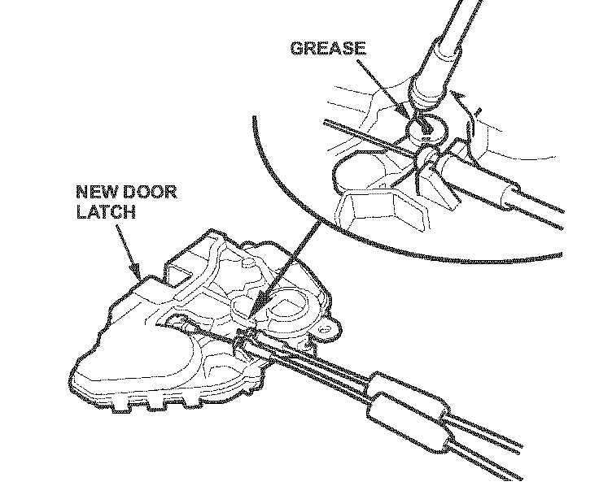

Body - Doors Will Not Unlock
07-023May 11, 2007
Applies To:
2007 MDX - From VIN 2HNYD28..7H500001 thru 2HNYD28..7H519450
Doors Will Not Unlock
SYMPTOM
In freezing temperatures, one or more doors may not unlock when using the keyless entry transmitter.
PROBABLE CAUSE
Water accumulates and freezes inside the door latch, preventing the lock lever inside the latch from moving to the unlocked position.
CORRECTIVE ACTION
Replace all four door latches.
PARTS INFORMATION
Door Latch:
Right Front - P/N 72110-STX-A03
Left Front - P/N 72150-STX-A03
Right Rear - P/N 72610-STX-A03
Left Rear - P/N 72650-STX-A03
WARRANTY CLAIM INFORMATION
In warranty:
The normal warranty applies.
Operation Number: 822121
Flat Rate Time: 3.0 hours
Failed Part: P/N 72110-STX-A01
Defect Code: 03217
Symptom Code: 01201
Template ID: 07-023A
Skill Level: Repair Technician
Out of warranty:
Any repair performed after warranty expiration may be eligible for goodwill consideration by the District Parts and Service Manager or your Zone Office. You must request consideration, and get a decision, before starting work.
DIAGNOSIS
Lock and unlock the doors using the keyless entry transmitter, and listen for the door lock actuator motor to make sure it is working.
^ If you hear the actuator, go to REPAIR PROCEDURE.
^ If you don't hear the actuator, disregard this service bulletin and refer to service manual symptom troubleshooting:
- Refer to page 22-156 of the 2007 MDX Service Manual, or
- Online, enter keyword DOOR SYMPTOM and select Keyless/Power Door Locks/Security System Symptom Troubleshooting from the list.
REPAIR PROCEDURE
NOTE:
To avoid damaging plastic interior parts, bring the vehicle indoors and allow the interior to warm up before starting work.
1. Replace all four door latches:
Front Door Latches -
^ Refer to page 20-14 of the 2007 MDX Service Manual, or
^ Online, enter keyword DOOR LATCH and select Front Door Latch Replacement from the list.
Rear Door Latches -
^ Refer to page 20-28 of the service manual, or
^ Online, enter keyword DOOR LATCH and select Rear Door Latch Replacement from the list.
NOTE:

^ Do not move, add to, or remove the grease on the new door latch. The correct amount of grease is on the latch for it to function properly.
^ When reinstalling a door panel, make sure the plastic cover is properly installed and sealed around the perimeter to prevent water from entering the door.
2. Make sure all the door latches work properly by locking and unlocking the doors with the keyless entry transmitter.

Disclaimer